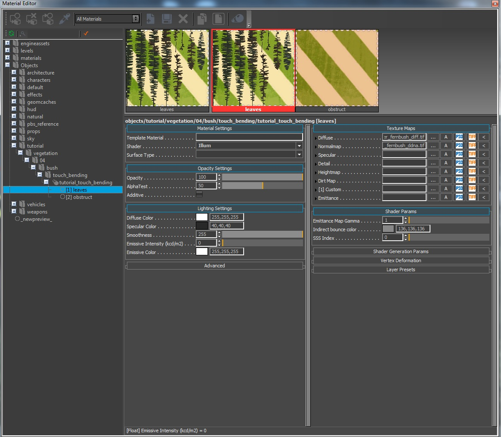
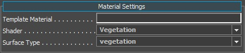
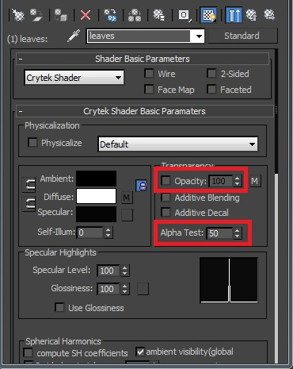
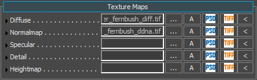
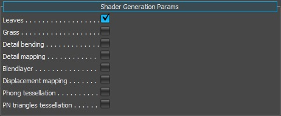
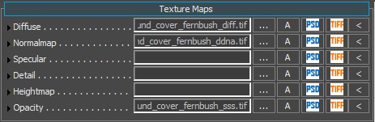
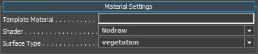
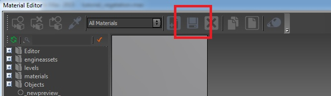
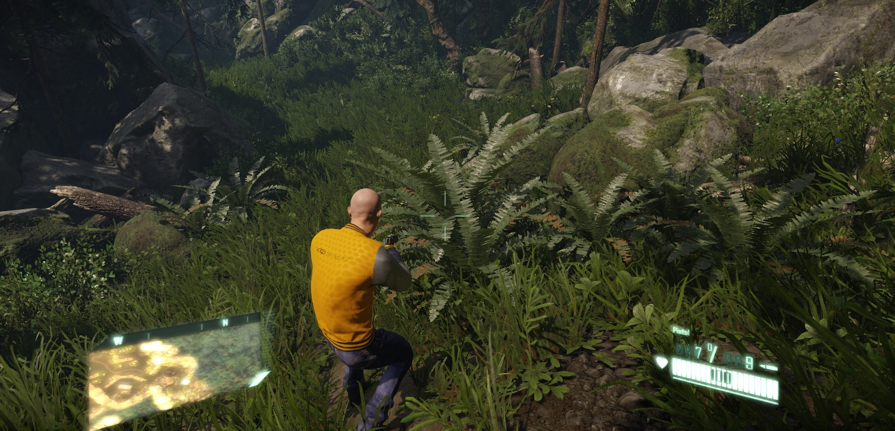
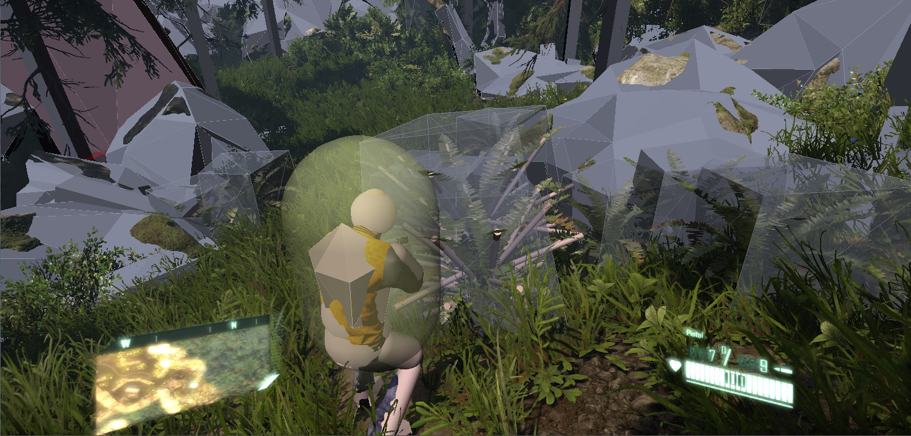

Material Setup in CRYENGINE
Now we have our asset configured correctly, let's move on to the CRYENGINE side of preparing the asset to be used for production. Have an existing level open or create an empty level as the testing area for this asset.
Material
First open the Material Editor and go to the tutorial_touch_bending material under:
<Your_Project>\Assets\Objects\tutorial\vegetation\04\bush\touch_bending\
If the export process is completed successfully for the material and geometry, you should have the material as shown. Note the correct folder structure and also the same material setup that we configured inside 3dsMax or Maya. A lot of the fields have been filled out already through the export process (note the Diffuse and Normal texture paths already filled in). But there are still a few options that we need to set ourselves.
DCC Tools has no concept of a surface type or shader type for example, so we can only define so much within the DCC tool material editor.
The rest is completed here in the CRYENGINE's Material Editor.

Pic1: Initial Material Editor view
We will start with ID1 and configure the material settings to make the asset behave correctly for CRYENGINE.
Material Settings
We only have to change two settings here the Shader and the Surface Type. The shader we want to use is the Vegetation shader and the surface type is also set to Vegetation. Select both from the drop down lists.

Pic2: Material settings
Opacity Settings
Here we are using the default values that we setup in the DCC tool. Opacity at 100% and the AlphaTest set to 50.

Pic3: Opacity

Pic4: Re-cap of where this info came from in 3dsMax
Lighting
Under the Lighting Settings, we can set the color parameters. To be correctly in line with the PBS pipeline, we have to:
- Set our Diffuse Color to pure white 255,255,255.
- Set the Specular Color within the 40 - 60 range (dark grey).
- Set the Smoothness slider to 255 max. Since we are controlling this value through the normalmaps alpha channel (ddna).

Pic5: Lighting Settings
Texture Maps
The Texture Maps section should already have been filled out with our Diffuse (*.diff) and our Normalmap (*.ddna).

Pic6: Texture maps
Shader Generation Params
This tab in the Material Editor will show you different options depending on the shader type you assign to this material SubId. Since we have selected the vegetation shader, it exposes the options that only apply to the vegetation. heck the box with the Leaves param. We want our asset to run through the higher quality pipeline.
Note that the Leaves parameter forces the material to be two-sided.

Pic7: Shader Generation Params
Name | Description |
|---|---|
| Leaves | Uses a higher quality rendering pass on the asset. |
| Grass | Uses a cheaper and faster rendering pass on the asset. |
| Detail bending | Used for adding random noise into the leaves movement (not required for this tutorial). |
| Detail mapping | Used for adding a detail map into the asset (not required for this tutorial). |
| Blend layer | Used for blending a second set of Diffuse and Normalmap textures (not required for this tutorial). |
| Displacement mapping | This is for applying tessellation to the asset (not required for this tutorial). |
| Phong tessellation | This is for applying tessellation to the asset (not required for this tutorial). |
| PN triangles tessellation | This is for applying tessellation to the asset (not required for this tutorial). |
Shader Params
As you may have noticed, we jumped this section in favor of the Shader Generation Params first. We wanted to enable the Detail Bending and Leaves options first to expose all the parameters that we need to configure the asset correctly. Enabling the Leaves parameters has exposed some additional ones in the Shader Params section. It should now look similar to the Pic8.

Pic8: Shader Params
Name | Description |
|---|---|
| Bending branch amplitude | Controls the macro movement amplitude (Blue channel). |
| Bending edges amplitude | Controls the micro movement amplitude (Red channel). |
| Cap opacity fall off | Controls how strongly vegetation polygons fade out when looking at them at a steep angle. This helps to disguise the plane shape of vegetation geometry. |
| Detail bending frequency | Controls micro and macro movement amplitude. |
| Indirect bounce color | Keep this at the default value. |
| Normal_View_Dependency | This value orients the normals towards the player and is useful for planes. |
| Terrain Color Blend | If you enable UseTerrainColor in the Vegetation tool for the object, this will absorb some of the color information of the underlying terrain where the vegetation object has been placed. This feature helps distant vegetation objects blend into the scene at distance. |
| Terrain Color Blend Dist | This slider controls how close to the camera the absorption of the terrain color will happen. |
| Transmittance Color | This color is what you would get if you were to shine a light through the leaf and look at it from the other side. |
| Transmittance Multiplier | Controls how strong the translucency (transmittance) effect will be. |
| Vtx Alpha Blend Factor | Used for faking AO. If you have applied some vertex paint to the base of grass geometry, you can control the strength of the blend effect with this slider. Technically, we do not need to use this because of technology such as SSDO, SSAO and SVOGI, but sometimes it can help the asset by using this. |
In addition to the extra parameters exposed in the Shader Params section, it has also added a new texture map slot for the Opacity. Please link to this file and add it to the material.
<Your_Project>\Assets\objects\natural\bushes\ground_cover_fern\ground_cover_fernbush_sss.tif>

Pic9: Adding the SSS map to the material
We use the opacity map to control where the transmittance effect (light passing through the surface) appears on the asset. This opacity map is a grayscale image that defines the foliage thickness and how much light can pass through from the backside.
Material Settings Id2 (obstruct)
Id2 was setup to be the Obstruct proxy that is set to behave as the trigger to activate the Touch Bending associated with this vegetation object. This material needs minor adjustments to be set correctly.
- Change the Shader to Nodraw (because this geometry will not be shown, it's an invisible trigger).
- Change the surface type to Vegetation.

Pic10: Material Settings
There is nothing more to set on the tb_proxy material.
Save the material
Inside the Material Editor, on the top toolbar, click the Save icon.

Pic11: Saving the material changes
Vegetation Tool
We will not go into an in-depth tutorial of the vegetation tool here. For more information of the usage of the Vegetation Editor, please refer HERE.
Navigate to the Tools menu option, and select the Vegetation Editor.

Pic10: Selecting the Vegetation Editor
Add a new Group and call it something appropriate (like "bushes")

Pic13: Adding a Vegetation group
Click the Add Vegetation Object (first button) to add a vegetation object to this group.

Pic14: Adding a vegetation object to the group
In the browse dialog, go to your folder where you saved the asset and select the bush
<Your_Project>\Assets\Objects\tutorial\vegetation\04\bush\touch_bending\tutorial_touch_bending
Now highlight the object you just added to the group to select it, and you can perform any one of the following operations:
- Enable the Paint Objects button to paint down lots of instances your bush asset, or
- To be more precise, do not select the Paint Objects button (so it's not active) and on the terrain press Shift+LMB to place only 1 instance.
Jump In-Game (CTRL+G) to Test

Pic15: Level Woodland, with touch bending fern bush added at the start

Pic16: As above but with the physics debug view on to see the active touch bending branches (p_draw_helpers=1)
Debugging Info
You can find a complete list of every parameter under Vegetation Parameters in this page HERE.
The following debug commands are also useful to keep in mind while you work with this system:
Name | Description |
|---|---|
| e_FoliageBranchesStiffness | (Default 100) Defines the speed of how fast branches will try to return to their original pose. |
| e_FoliageBranchesDamping | (Default 10) Enables to damp the stiffness; without it a branch would sway back and forth, without returning to its original position. |
| e_FoliageBranchesTimeout | (Default 5) Deactivates a vegetation object forcefully when no collisions takes place within this time interval (even if it's still moving). |
| e_FoliageBrokenBranchesDamping | Sets ropes thickness. This is the same as damping, but only for parts of vegetation that breaks away thickness (UDP-only; if not set, either 0.03 or 0.1 is used, depending on length). |
| p_draw_helpers | (Default 0) Allows to disable/enable the physics debug view mode. With this enabled the user can see how the branch setup is working within the asset. (0 / 1) |
| e_vegetation | (Default 1) Allows to disable/enable the vegetation system completely (0/1). |